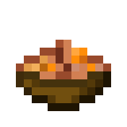

Rabbit Stew
Home

Description
In Bedrock Edition, novice-level Butcher villagers always offer to sell rabbit stew for one emerald as their second trade.
In Java Edition, novice-level Butcher villagers have a 50% chance of offering rabbit stew for one emerald.
Ingredients
- Cooked Rabbit
- Carrot
- Baked Potato
- Any Mushroom
- Bowl
How To Make
- Harvest and cook the rabbit using a furnace.
- Craft together the ingredients using a crafting table.
- To eat rabbit stew, press and hold use while it is selected in the hotbar.